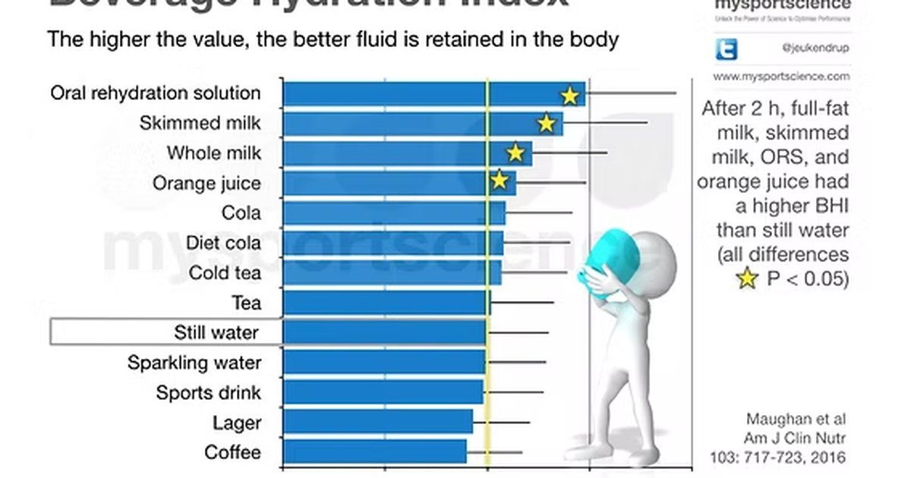

I have a love‑hate relationship with beverage rankings. On one hand, I love data. Give me a spreadsheet with BHI values, electrolyte content, and calorie counts, and I’m happy for hours. On the other hand, I hate when people take a ranking and treat it like a commandment. “Milk is the most hydrating, so I’ll only drink milk.” That’s not how hydration works. You need variety. You need context. You need to know that milk is great for hydration but also has 150 calories per cup. So here’s my ultimate guide to beverages ranked by hydration power. I’ll give you the numbers, but I’ll also tell you when to use each one. Tier one is milk. Whole milk, skim milk, even plant milks fortified with calcium and protein. The Beverage Hydration Index for milk is 1.5. That means your body retains 50% more fluid from milk than from the same volume of plain water. Why? Protein, fat, and lactose slow down gastric emptying. The fluid stays in your system longer. Plus, milk has sodium, potassium, and calcium — electrolytes that help with retention. When should you drink milk for hydration? After exercise, especially if you need protein for muscle repair. Chocolate milk has been studied as a post‑workout recovery drink, and it works. Also for people who struggle to keep weight on. Milk is calorie‑dense. Not great for weight loss, but great for recovery and for kids who won’t drink water. I had a teenage athlete client who was chronically dehydrated. He hated water. He loved chocolate milk. I told him to drink 500 mL (17 ounces) of chocolate milk after practice. His hydration status improved, his cramps stopped, and he gained lean muscle. That’s a win. Tier two is oral rehydration solutions. Products like Pedialyte, DripDrop, and generic pharmacy brands. BHI around 1.1. These are designed for rapid rehydration after illness or heavy sweating. They have the right balance of sodium, glucose, and sometimes potassium. They work fast. When to use them? When you’re vomiting, have diarrhea, or have been sweating for hours in extreme heat. Also for hangovers — the dehydration from alcohol is real, and Pedialyte fixes it faster than water alone. But don’t drink these as your daily beverage. They’re expensive and not necessary for everyday hydration. Tier three is plain water. BHI of 1.0. “The baseline.” Zero calories, zero additives, zero cost if you use tap water. It’s the standard against which all other beverages are measured. For most people, most of the time, plain water is all you need. When to drink it? Every day, all day. Between meals, during workouts, when you’re thirsty. If you’re a desk worker in a temperate climate, 80% of your fluid intake could be plain water, and you’d be fine. Tier four is coffee and tea. BHI around 0.98. Almost as hydrating as water. The caffeine is a mild diuretic, but not strong enough to offset the volume of water in the drink. For regular coffee drinkers, the diuretic effect is even smaller because your body adapts. When to drink them? In the morning, as a pick‑me‑up, socially. Just don’t replace all your water with coffee. Two to three cups per day is fine. I drink two cups every morning, but only after my 500 mL of plain water first. Tier five is sports drinks. BHI ranges from 0.95 to 1.1, depending on the sodium content. A sports drink with 500 mg of sodium per liter will have a BHI close to 1.1. A sports drink with only 150 mg of sodium is barely better than water. When to use them? During exercise longer than 90 minutes, especially in hot weather. They provide sodium, potassium, and carbohydrates. For a 30‑minute jog, water is fine. For a marathon, you need electrolytes. Don’t drink sports drinks as your everyday beverage. They have sugar and calories that you don’t need if you’re sitting at a desk. Tier six is juice. BHI around 0.9. Orange juice, apple juice, grape juice. The sugar slows gastric emptying a bit, but not as much as protein or fat. Juice also has vitamins and antioxidants, but it’s calorie‑dense and low in sodium. When to drink it? With breakfast, as a treat, or when you need quick energy. A small glass of orange juice has about 110 calories and 120 mL of net fluid. It’s not a hydration powerhouse, but it’s not useless. Tier seven is soda. BHI around 0.89. Regular and diet soda both land here. The sugar or artificial sweeteners don’t help with hydration, and the caffeine in colas adds a diuretic effect. Diet soda has no calories, but also no electrolytes. When to drink it? As an occasional treat. Don’t rely on soda for hydration. A person who drinks eight cans of Diet Coke a day is getting less net fluid than someone who drinks eight glasses of water, plus all that caffeine and artificial stuff. Tier eight is beer. BHI 0.79. Alcohol inhibits vasopressin, so you pee more. Beer is not a hydration beverage. It’s a social beverage that happens to contain water. When to drink it? Socially, in moderation. One beer on a hot day won’t dehydrate you dangerously. But if you’re thirsty, drink water first, then have your beer. Tier nine is wine. BHI around 0.7. Same issue as beer but worse because wine has higher alcohol content per volume. A glass of wine is less hydrating than a glass of beer of the same size. When to drink it? With dinner, as a pleasure. Not as a hydration strategy. Tier ten is spirits. Whiskey, vodka, gin, rum. BHI around 0.6‑0.7 when mixed with water or soda water. If you drink them straight, they’re even worse because the alcohol concentration is higher. The diuretic effect is strong. When to drink them? Rarely, and always with a glass of water on the side. Now let me put this into a real‑world example. A friend of mine, let’s call her Priya, was trying to hydrate better. She was a busy mom who drank mostly coffee and Diet Coke. She thought she was drinking enough because she had a cup of coffee in the morning, a Diet Coke at lunch, another in the afternoon, and maybe a glass of wine at night. Total volume maybe 1.5 liters. But net hydration after BHI? Coffee 0.98, Diet Coke 0.89, wine 0.7. Her net fluid was closer to 1.3 liters. She was mildly dehydrated every day and didn’t know it. We didn’t take away her coffee or wine. We just added 500 mL of plain water in the morning and another 500 mL in the afternoon. Her net fluid jumped to 2.3 liters. Her headaches vanished. Her skin cleared. She said she felt like a fog had lifted. That’s the power of understanding beverage rankings. It’s not about elimination. It’s about addition. I built a tool that lets you rank your own beverages.Beverage Hydration Index Tool
Search 80+ beverages. See BHI, net fluid per cup, electrolytes, and calories.
All data stays in your browser — we never see it.
Hydration Goal Setter
Log your drinks. The app calculates net fluid using BHI values.
All data stays in your browser — we never see it.
Daily Water Intake Calculator
Start with your individualized goal, then use the BHI tool to see if your beverage choices are getting you there.
All data stays in your browser — we never see it.